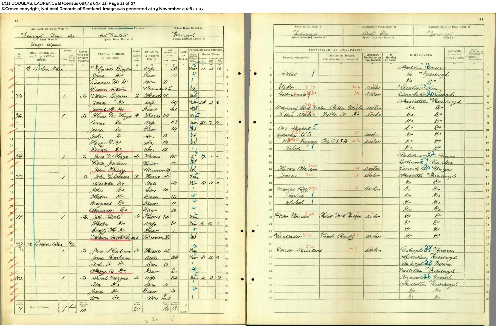

Item 17 · April 2, 1911
1911 census: 16 Lochrin Place, Edinburgh
The document

Tap an image to open it full size.
Transcription, word for word
Everything as written, including misspellings. [?] marks an uncertain reading. Struck-through words are marked as struck through. Notes in square brackets describe the page and are not part of it.
[Printed header] 1911 DOUGLAS, LAURENCE B (Census 685/4 69/ 11) Page 11 of 23 [Printed] ©Crown copyright, National Records of Scotland. Image was generated at 19 November 2026 21:07 [Left page, page number 11] Civil Parish and Parish Ward of: Edinburgh. George Sq. Burgh Ward of: George Square. Ecclesiastical Parish or [Quoad Sacra — struck through] Parish of: St Cuthberts. Special Water District of: [blank] School Board District of: Edinburgh. Special Drainage District of: [blank] [Columns] No. of Schedule | Road, Street, &c., and No. or Name of House | Houses inhabited / uninhabited | Rooms with one or more windows | Name and Surname | Number of persons in house | Relation to Head of Family | Age: Males / Females | Gaelic | Particulars as to Marriage: Single, Married, Widower or Widow | Duration of marriage | Children born alive | Children still living [Down the left margin, a red tick is drawn beside every line. A blue line runs down the address column. Red lines are drawn under the last person of several households.] 1. 16 Lochrin Place. Elizabeth Douglas, Wife, F 30[?], Mar., 11, 2, 2 2. Janet Do, Daur, F 10 3. Laurence B Do, Son, M 3 4. Donald Stevens[?], Boarder, M 25, S 5. Sch. 74, 1 house, 2 rooms. William Logan, 3, Head, M 50, Mar. 6. Jerrid[?] Do, Wife, F 49, Mar., 26, 3, 2 7. Jerrid M. Do, Daur, F 21, S 8. Sch. 75, 1 house, 2 rooms. Thomas McKenzie, 6, Head, M 50, Mar. 9. Annie Do, Wife, F 43, Mar., 20, 7, 4 10. Jane Do, Daur, F 19, S 11. John Do, Son, M 18, S 12. Henry G. Do, Son, M 16, S 13. David Do, Son, M 12 14. Sch. 76, 1 house, 2 rooms. Jane McKenzie, 3, Head, F 50, W., 9[?], –, – 15. Bella Jackson, Visitor, F 17, S 16. John Henry, Boarder, M 27, S 17. Sch. 77, 1 house, 2 rooms. John Chalmers, 6, Head, M 42, Mar. 18. Isabella Do, Wife, F 38, Mar., 15, 4, 4 19. John Do, Son, M 14 20. Helen Do, Daur, F 13 21. Margaret Do, Daur, F 11 22. Alexander Do, Daur [sic], F 2 23. Sch. 78, 1 house, 2 rooms. John Birnie[?], 4, Head, M 34, Mar. 24. Helen Do, Wife, F 31, Mar., 4, 2, 1 25. Dorothy H Do, Daur, F 1 26. William R McCulloch, Boarder, M 32, S 27. Sch. 79, 18 Lochrin Place, 26[?] [an arrow drawn from the schedule number] 28. 1 house, 2 rooms. James S Cochrane, 4, Head, M 28, Mar. 29. Jane Cochrane, Wife, F 26, Mar., 3, 2, 2 30. John G. Do, Son, M 3 31. Mary A. Do, Daur, F 6 mths 32. Sch. 80, 1 house, 2 rooms. Sarah Menzies, 4, Wife, F 32, Mar., 4, 3, 3 33. Alex Do, Son, M 4 34. Janet Do, Daur, F 2 35. Wm Do, Son, M 8 mths Totals: Schedules 7. Houses 7 inhabited, 1 uninhabited. Windowed rooms 14. Persons 30. Males 16. Females 18. [Below the page, in pencil] 8.26 ✓ [Right page, page number 11] Parliamentary Burgh of: Edinburgh. Parliamentary Constituency of: South Div. Municipal Burgh or Police Burgh of: Edinburgh. Special Scavenging District of: [blank]. Special Lighting District of: [blank]. Island of: [blank] [Columns] Personal Occupation | Industry or Service with which Worker is connected | Employer, Worker, or Own Account | If Working at Home | Birthplace | Nationality if born in a Foreign Country | Whether Deaf and Dumb, Blind, Lunatic, Imbecile [Clerk's code numbers in red and blue ink written beside many entries are given as [code]] 1. — Midlothian Gilmerton [code] 2. School [code] — Do Edinburgh 3. — Do Do 4. Tailor [code], [code], Worker — Caithness-shire [code] 5. Cabinetmaker [code], [code], Worker — Lanarkshire Lanark [code] 6. — Midlothian Edinburgh 7. Waterproof Coat Maker, Rubber Works [code], Worker — Do Do 8. Rubber Worker [code], N. B. Do Do [code], Worker — Do Do 9. — Do Do 10. Art Student [code] — Do Do 11. Apprentice C.A. [code], [code], Worker — Do Do 12. Do Draper [code], P. & C. S. S. A.[?] [code], Worker — Do Do 13. School [code] — Do Do 14. — Sutherlandshire [code] Dornoch[?] 15. — Lochcarron[?] [code] Ross-shire 16. House Painter [code], [code], Worker — Lanarkshire [code] Glasgow 17. Joiner [code], [code], Worker — Midlothian Edinburgh 18. — Do Do 19. Message Boy [code], [code], Worker — Do Do 20. School [code] — Do Do 21. School [code] — Do Do 22. — Do Do 23. Boiler Fireman [code], Heriot-Watt College [code], Worker — Do Do 24. — Do Do 25. — Do Do 26. Compositor [code], Book Printing [code], Worker — Do Do 27. — 28. Grocers Assistant [code], [code], Worker — Roxburghshire [code] Borders[?] 29. — Midlothian Edinburgh 30. — Roxburghshire [code] Melrose 31. — Midlothian Edinburgh 32. — Renfrewshire [code] Greenock 33. — Midlothian Edinburgh 34. — Do Do 35. — Do Do